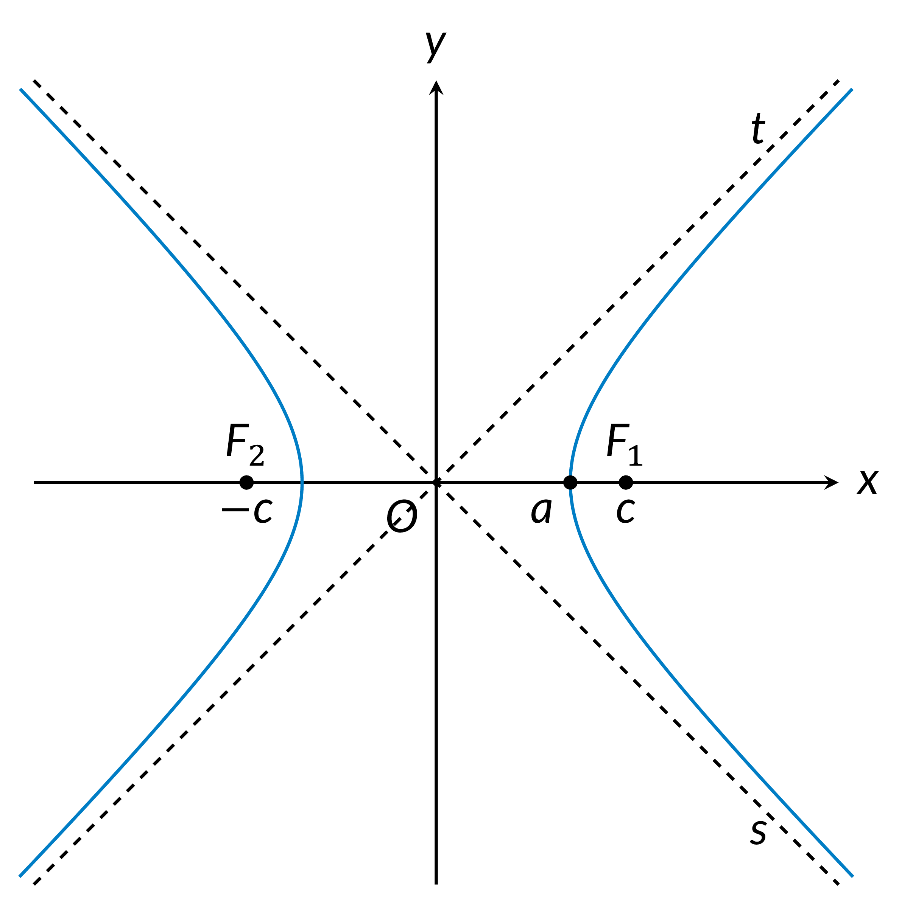
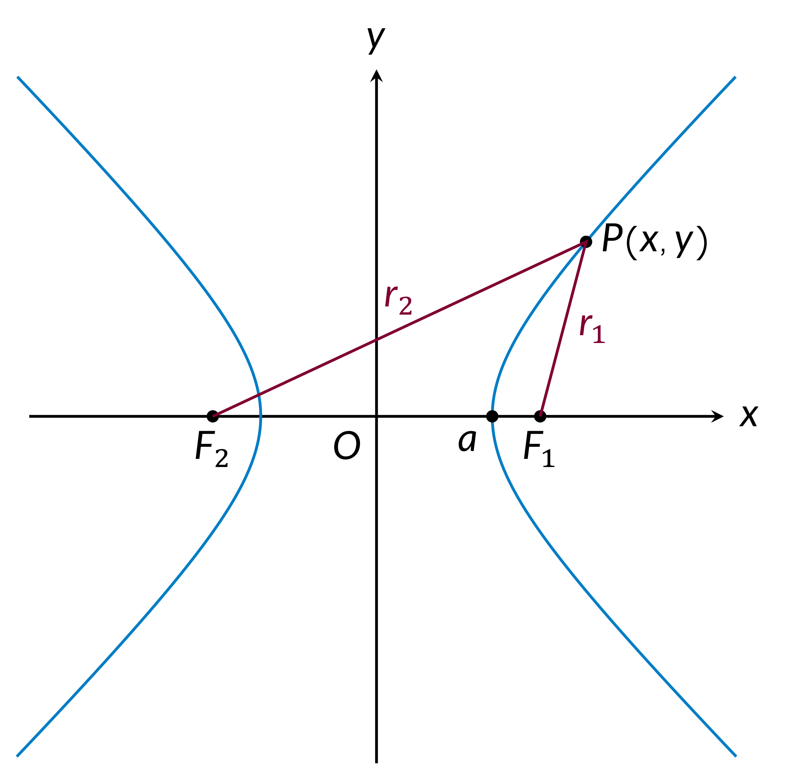
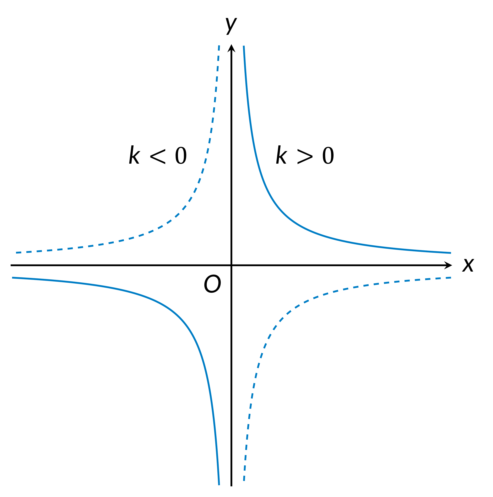

Transverse axis: $a$
Conjugate axis: $b$
Foci: $F_1(-c,0)$, $F_2(c,0)$
Distance between the foci: $2c$
Eccentricity: $e$
Asymptotes: $s, t$
Real numbers: $A,B,C,D,E,F,t,k$
- Equation of a Hyperbola (Standard Form)
$$\dfrac{x^2}{a^2} - \dfrac{y^2}{b^2} = 1$$

- $\left\lvert r_1 - r_2 \right\rvert = 2a$,
where $r_1, r_2$ are distances from any point $P(x,y)$ on the hyperbola to the two foci.

- Equations of Asymptotes
$$y = \pm \dfrac{b}{a}x$$
- $c^2 = a^2 + b^2$
- Eccentricity
$$e = \dfrac{c}{a} \gt 1$$
- Equations of Directrices
$$x = \pm \dfrac{a}{c} = \pm \dfrac{a^2}{c}$$
- Parametric Equations of the Right Branch of a Hyperbola
$$\begin{cases} x = a\cosh t \\ y = b\sinh t\end{cases},\, 0 \le t \le 2pi$$
- General Form
$$Ax^2 + Bxy + Cy^2 + Dx + Ey + F = 0$$,
where $B^2 - 4AC \gt 0$.
- General Form with Axes Parallel to the Coordinate Axes
$$Ax^2 + Cy^2 + Dx + Ey + F = 0$$,
where $AC \lt 0$.
- Asymptotic Form
$$\begin{aligned}
&xy = \frac{e^2}{4}, \\\\
&\text{or} \\\\
&y = \frac{k}{x},\text{ where } k = \frac{e^2}{4} \\\\
\end{aligned}$$
In this case, the asymptotes have equations $x = 0$ and $y = 0$.
